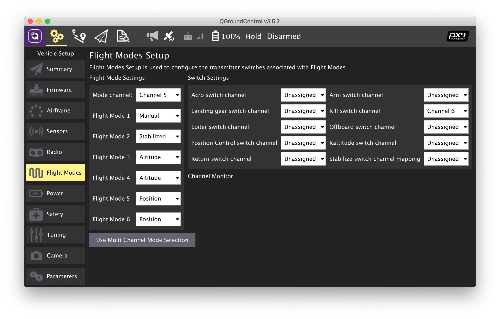

Полетные режимы
Режим полетного контроллера PX4 определяет, как именно квадрокоптер (или другой аппарат) должен себя вести: каким образом интерпретировать входящие команды и сигналы с пульта. Режим переключается одним из переключателей на пульте радиоуправления.
Чтобы настроить полетные режимы:
- В программе QGroundControl перейдите в панель Vehicle Setup.
- Выберите меню Flight Modes.
- Установите переключатель режимов (Mode Channel) на переключатель SwC (Channel 6).
- Опционально, установите экстренное отключение пропеллеров (Emergency Kill Switch Channel) на переключатель SwA (Channel 5).
Выберите необходимые полетные режимы.
Рекомендуемые полетные режимы:
- Flight Mode 1: Stabilized.
- Flight Mode 4: Altitude.
- Flight Mode 6: Position.
Проверьте корректность переключения режимов, переключая переключатель на пульте.
- Назначьте аварийное отключение моторов (Kill switch) на переключатель SwA (Channel 5).

Подробное описание полетных режимов
Ручное управление
При ручном управлении пилот управляет квадрокоптером напрямую. GPS, данные с компьютерного зрения и барометр не используются. Для полетов в этих режимах необходимы хорошие навыки пилотирования мультикоптеров.
- STABILIZED/MANUAL — режим стабилизации горизонтального положения. Управление газом, углами наклона коптера по тангажу и крену, угловой скоростью по рысканью.
- ACRO — управление газом и угловой скоростью коптера по тангажу, крену и рысканью. Используется дрон-рейсерами и в шоу 3D-пилотирования для выполнения трюков.
- RATTITUDE — в центре правый стик аналогичен STABILIZED, по краям переходит в режим ACRO.
С использованием дополнительных датчиков
- ALTCTL (Altitude) — управление скоростью изменения высоты полета, углами по тангажу и крену и угловой скоростью по рысканью. Используется барометр (или иной датчик высоты).
- POSCTL (Position) — управление скоростями набора высоты, скоростью движения вперед/назад и вправо/влево, угловой скоростью по рысканью. Наиболее простой для полетов режим. Используется барометр, GPS, компьютерное зрение, другие датчики.
Автоматический полет
В этих режимах квадрокоптер игнорирует сигналы с пульта и летает по какой-либо автоматической программе.
- OFFBOARD — управление полетом с OrangePi 5 Pro. Этот режим используется в Технике для программирования автономных полетов.
- AUTO.MISSION – квадрокоптер выполняет заранее загруженную в квадрокоптер миссию. Миссия загружается при помощи QGroundControl, или по MAVLink. Этот режим чаще всего применяется для автоматических полетов по точкам с использованием GPS, например, для фотограмметрии.
- AUTO.RTL – коптер автоматически возвращается в точку взлета.
- AUTO.LAND – коптер выполняет посадку.
Дополнительная информация: https://dev.px4.io/en/concept/flight_modes.html.